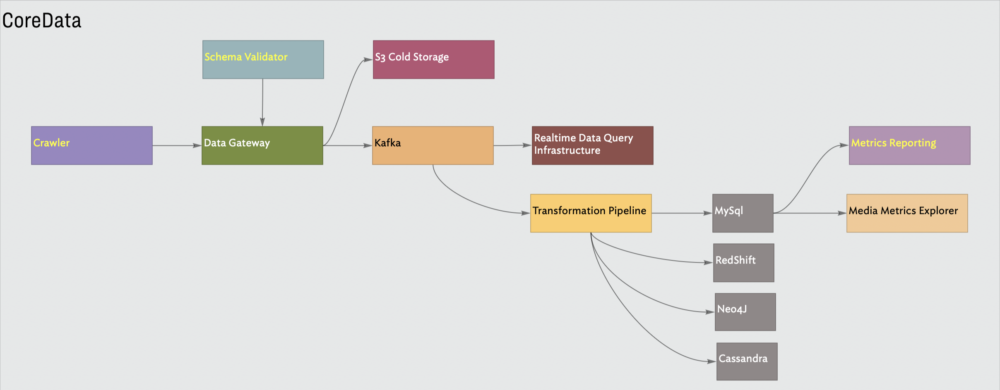

| Dates: | Jun 2012 - Aug 2015 |
| Role: | Lead |
| Technologies: | caktus, cassandra, celery, graphite, jenkins, kafka, neo4j, redis, redshift, vagrant, zookeeper |
| Programming Languages: | erlang, java |
| DSLs: | chef, sql, tla+ |
Provide infrastructure, named CoreData, to collect campaign metrics from various social networks. Ensure that the acquired data is well understood and store this data in databases to serve use cases from research and product development.
Specify, design and implement the CoreData system. I led the group of two engineers. I was involved This was a greenfield project.

The biggest challenge was interacting with stakeholders while designing, building and deploying the system.
| Joshua Ginsberg: | https://www.linkedin.com/in/joshuaginsberg/ |
| Keshav Magge: | https://www.linkedin.com/in/keshav-magge/ |
| Paul Hulet: | https://www.linkedin.com/in/paulhulett/ |
| Mike Neely: | https://www.linkedin.com/in/mneely/ |
| Tom Fruchterman: | https://www.linkedin.com/in/tom-fruchterman/ |
| Woody Pearson: | https://www.linkedin.com/in/woodrowpearson/ |
Unknown, I left the company in 2015.
Provide a reliable mechanism for managing statistics crawling across the various social media sites used for ad campaigns. Crawls should be easy to configure without impacting other ongoing crawls.
I implemented this system.
Design a simple configuration language to express crawl requirements across different social networks. Provide an easy way to add new crawl endpoints, expose crawl progress on a per-vertical basis with fault tolerance and ease of debugging
The system was implemented in Erlang.
A performant production ready implementation was provided.
The company decided to stick with an earlier implementation relying on Celery and Django. This was never deployed to production
Provide an entry point receive datasets published by the CoreCrawler infrastructure. Validate these data against registered schemas and publish valid data to the Kafka cluster. Preserve a history of all data acquired by the company.
I was the sole implementer of the CoreData Gateway.
In addition to schema validation The server was also a client to S3 and Kafka. The interface needed to expose performance characteristics of the Kafka bus and provide detailed error messages.
An error dictionary was defined with codes so that the crawler infrastructure could programmatically respond to problems. If the kafka clients were failing, publishing would be stopped, if validation errors for a data metric were failing crawling for this would pause until the change in expected output was analyzed and properly reflected in the schema validation phase.
The REST interface
A stress tested system was deployed to production in less than two months.
Unknown
Provide streaming access to campaign performance data with durability. Support an arbitrary number of consumers on this data.
I implemented the Kafka cluster and was responsible for testing failure scenarios with downed partitions. Performance testing and capacity planning were also addressed.
Ensuring that the interaction of Kafka with Zookeeper and the various failure modes was well understood by other members on the team.
I chose a 3-node cluster for our system. The supporting Zookeeper cluster was also run on 3 nodes. A main objective of the was to support the loss of one Amazon Availability Zone. Each zone hosted one instance of Kafka broker and a Zookeeper node.
This infrastructure was delivered into production running in three Amazon Availability Zones.
This data bus was still running in production when I left the company.
Consume data published to Kafka queues by the CoreGateway infrastructure. Transform this data for different use cases and database targets.
I was responsible for working on the specification and providing design review for this component.
Several downstream databases needed to maintained, this pipeline needed to write subsets of the incoming data
The processing pipeline was implemented with Apache Storm.
The essential functionality required to maintain the MySql and Redshift databases was deployed to production. Additional work was under development to support Neo4J and Cassandra.
This pipeline was running in production at the time I left the company.
Provide a query interface to access data published into the Kafka. Enable end-to-end verification of CoreGateway publishing and Kafka cluster integrity. Enable performance testing of the data bus. This also provided a mechanism for product and research to explore new ideas.
I implemented this system.
This subsystem provided a REST interface to a Kafka client.
This system was an essential component in QA testing of the data pipeline. In addition to data integrity it provided a mechanism for testing latency on the databus. The research team also leveraged this to research potential new features.
This system was running in production when I left the company.
Provide access to campaign statistics published by third party social networks. Product teams could define calculations over the raw statistics to quickly generate client specific data sets.
I defined the DSL for this REST interface. Users could install simple formulas to calculate compound metrics. The interface hosted an expression parser to calculate these additional metrics on the fly.
Allow user’s, primarily product, to access data using their own naming. The system needed to support easy aliasing of campaign metrics and compound metrics specified by the product team.
Examples of interacting with this interface are here courtesy of Dave Rogers who was the principal implementer:
This interface was implemented in TastyPie http://tastypieapi.org and was a solid effort to follow the HATEOS architectural style. A principle integration point was the Facebook OpenGraph API which followed this pattern as well. Critical inspiration came from:
This service was delivered to production along with training videos. It was accessible to all employees in the company.
This was service was still running in production when I left the company.